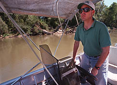
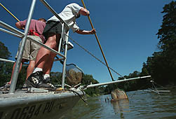
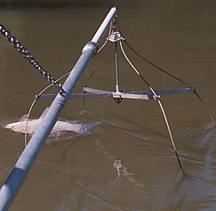
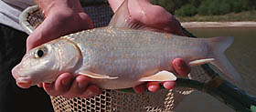

Electrofishing
|  | Boat operator also operates electrofishing control box, which converts AC output from generator to AC/DC electrofishing output with adjustable voltage, current and wave form (photo reprinted with permission of the Baton Rouge Advocate Newspaper, Bill Feig, Photographer). |
|  | Fishers standing at the front of the boat control the flow of current, which runs from the boat (cathode) to wire droppers suspended from long booms (anode) (photo reprinted with permission of the Baton Rouge Advocate Newspaper, Bill Feig, Photographer). |
|  | Fish like this carpsucker are drawn toward the electric field running between the boat and the droppers (galvanotaxis). They become immobilized when they reach the droppers and are easily netted (photo reprinted with permission of the Baton Rouge Advocate Newspaper, Bill Feig, Photographer). |
|  | Fish are stunned, but generally are not harmed otherwise by electrofishing. Moreover, electrofishing does not damage fins or scales as is frequently the case with entanglement devices. Thus, specimens obtained by this method are of the highest study quality (photo reprinted with permission of the Baton Rouge Advocate Newspaper, Bill Feig, Photographer). |
Return to Field Work